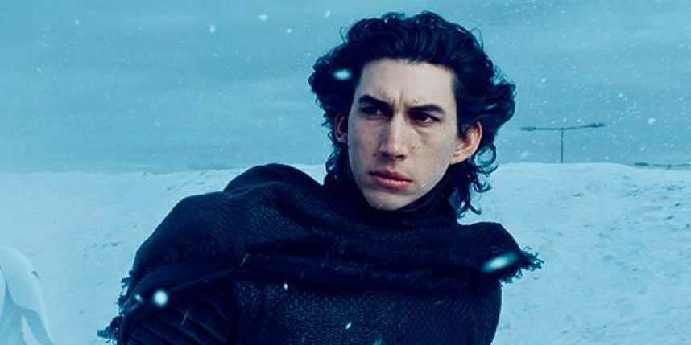
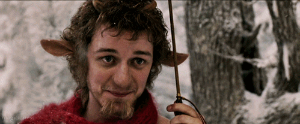
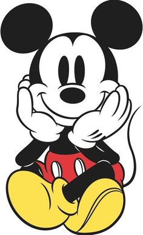

А почему у тебя такие большие уши? Выбираем самых «ушастых» знаменитостей
29 июля 2016
Продолжаем веселиться: в этот раз мы обратились к выдающейся части тела — ушам. Большим, маленьким, необычной формы, эльфийским. Их, оказывается, столько!
Раз уж этим летом мы продолжаем традиции (например, рассказываем про ребят и девчонок 30 до 30) — то вопрос, а не создать ли нам сиквел к нашей легендарной статье про брови, возник сам собой. Даже интересно — кто-то из прошлогоднего списка тут отметится? Если так, сделаем для него специальный приз — самому бровасто-ушастому!
В общем, вспомним Красную Шапочку, спросим: «Бабушка, а почему у тебя такие большие уши?» и отправимся на поиски самых-самых.
Начинаю с самого ожидаемого варианта. На самом деле, просто на Тёмной Стороне печеньки, а я печеньки люблю (жаль, от них не уши растут, а целлюлит…)

Кайло Рен (точнее, Соло), а ещё точнее — Адам Драйвер. Над его ушами не пошутил разве что… а, нет, все проехались.
Но я шутить не буду, а подойду к делу основательно. Потому что Адам, на самом деле, актёр серьёзный. И мы его в редакции любим и уважаем.
С Тёмной Стороны сбежим на светлую. От брюнетов к блондинам. От злодеев к героям. Не будем тянуть кота за уши хвост. Крэйг. Дэниэл Крэйг.
И, если Адам абсолютно нормально относится к своим ушам, то Дэниэл очень переживает. «Если ты очень озабочен своей внешностью, я считаю, это — неправильно. До тех пор, пока мои уши не слишком торчат, я счастлив».
А я вспоминаю его в «Ларе Крофт» и думаю: «Дэн, ну, все же нормально».
Может, когда он качался для Бонда — и уши накачались? Кто знает?
Некоторые так переживают, что делают пластические операции. Хотя, казалось бы, это люди, которые нормально относятся к себе и окружающему миру. Принимают его с юмором. В общем, это было ЛЕ-ГЕН-ДАРНО. Было. Сейчас уже нет.
Нил Патрик Харрис, мы тебя любым любим, ты знай!
Я никогда не думала, что у этого актёра уж очень большие уши. И, как прочитала в одной статье, люди не обращают на них внимание, ослеплённые красотой его лица. Я бы ещё добавила — торса. Угадаете, кто это? Конечно, Ченнинг Татум. Мррр!
Хотя вот Вачовски заметили. И даже увеличили. Получился из Ченнинга отличный волчонок. Так что все навострили ушки и смотрим.

Ещё один известный ушастик — Уилл Смит.

Вот и в «Правила съёма: Метод Хитча», когда его герой страдает от аллергии, уши тоже страдают.
Уилл пошутил как-то, что поскольку он и Барак Обама — оба обладатели больших ушей, то он — лучший выбор на роль президента. Проголосуем за него?
Раз уж речь зашла о комиках, не могу не упомянуть Джима Керри.
Вообще, по сравнению с другими участниками ухо-парада Джим немного проигрывает, но не отметить его я не могла.

Тем более, он, бедняга, лишился ушек в «Маске». Восстанавливаем баланс.
А что всё о мальчиках и о мальчиках? Давайте уже и о девочках поговорим.
Начнём с Дженнифер Гарнер (и поздравим её с воссоединением семьи — мы переживали).
Слава пришла к Джен с ролью Сидни Бристоу в сериале «Шпионка». Потом была «Электра», с которой жене не повезло так же, как и мужу (у Бена Аффлека тоже не всё сразу сложилось с супергероями).
В общем, уши не сыграли какой-то заметной роли в её карьере, но никогда особо и не мешали. Мы любим Джен за другое.
Отвечают ли большие уши за проблемы с личной жизнью — мы не знаем, но вот у Кейт Хадсон с Мэттью Беллами тоже не всё гладко.
Кейт, которая становится всё больше и больше похожа на свою мать Голди Хоун, не раз делала пластику носа, но уши не трогала. Ещё бы — это её изюминка. А изюминку надо беречь.
Некоторые актрисы специально выставляют свою лопоухость напоказ. И тут в наш топ врывается российская актриса — Паулина Андреева. На последней красной дорожке с открытия Московского кинофестиваля она появилась в брючном костюме с плотно собранными волосами, так что уши были на виду!
Но Паулина ничуть не смущается — ещё бы. С таким бойфрендом, как Федор Бондарчук, и я бы ничего не боялась.
Шикарным брюнеткам вообще нечего бояться — распустил волосы, и большие ушки и не видно. Оливия Уайлд, например, отлично справляется с этим.
Но в Оливии прекрасно всё! Так что никаких претензий.
Восстанавливаю гендерное равенство. И с изяществом — есть прекрасный экземпляр с Британских островов. Вы можете его помнить по появлению в роли Генри Баскервиля в «Шерлоке», но истинному британоману (или британофилу) он известен ещё по «Любителям истории» и «Быть человеком».
Встречайте — Рассел Тови. В Британии всегда всё самое-самое: красавцы — так глаз не оторвать, уши — так с Дамбо сравнивают.
Конкуренцию ему составляет Адам Годли. И знаете, серьёзную такую конкуренцию.
Слава пришла к нему только после 40, да и роли с тех пор — в большинстве своём второго плана и эпизодические, но такие, что из всего фильма или сериала вы его точно запомните!
Я, например, в восторге от его Демьяна Лукича из «Записок юного врача». Пусть там уши и скрыты под париком.
Перехожу вновь к комикам (им, видимо, по контракту положено иметь большие уши). И не могу не вспомнить Джона Красински.
Муж Эмили Блант (!). Вроде после этого даже добавить нечего. Джон недавно раскачался, снялся для Men’s Health, и все, наконец-то, заметили, за что его Эмили выбрала. Кстати, Джон ещё может войти в наш топ «Самый большой нос». Это так, на будущее.
И снова девочки. Красински отвечал за категорию «известный муж известной актрисы». Теперь будет наоборот.
Начнем с Ферги (Стейси Фергюсон). Их пара с Джошем Дюамелем — просто милота. Украшение Голливуда.
И свои не самые маленькие ушки Ферги тоже часто украшает россыпью различных серёжек и пусет.
Ещё одна (но уже бывшая) звёздная жена — Кэти Холмс.
Кэти вообще не очень любит показывать уши. Но иногда непроизвольно делает на них акцент. Что там специалисты НЛП говорят?
.gif)
Вернемся ненадолго к мальчикам, чтобы завершить парад крутыми девушками.
Тут у нас Келлан Латц — помните же его Эммета в «Сумерках» или крутого парня из «Неудержимых»?
Кроме ушей, у Келлана такие глаза (и тело, тело!), что на любой вопрос я, конечно же, отвечу «Да».
Форест Уитакер тоже прославился не только своими ушами (вернее, не столько ими).
Но не включить его в наш список мы не могли. Тем более уже совсем скоро (ура-ура) мы увидим его в «Изгой-Один. Звёздные войны: Истории».
Ну, и как обещали, крутые девчонки!
Мы знаем её как Монику, и, наверное, Кортни Кокс никогда не избавится от этой роли.
Впрочем, и не надо. Учитывая, что она сделала с собой с помощью пластики (даже картинку не хочу показывать), лучше давайте помнить её как Монику.

Мы с вами столько говорили про уши, но ни разу не вспомнили тех, кто ими может просто гордиться — эльфов. Мы знаем, что в фильмах это чаще всего специальные накладки, но вот нашли актрису, которая обладает эльфийскими ушками в реальной жизни — Энн Хэтэуэй.

Просто волшебные! Вы никогда не замечали? Наверное, если бы Питер Джексон предложил роль ей, а не Эванджелин Лилли, сэкономил бы много миллионов на реквизите.
И на финал мы оставили guilty pleasure многих, но точно не наше — мы эту актрису очень любим. И за роли (она, несомненно, талантлива) и за непосредственность в жизни (только она может скинуть туфли и ходить босиком сразу после красной дорожки). Не будем вас долго томить — это Кристен Стюарт.
И свои уши (как и ноги), она тоже не боится показывать. Сама Кристен говорит: «Любить и уважать самого себя — это единственный путь, чтобы кто-то делал то же самое. Я не хочу быть идеальной, я хочу, чтобы люди видели меня такой какая я есть». Шикарная женщина!
Поставила всю редакцию на уши со своим постом, но никак иначе! Так что как обычно — бонусы-бонусы. И, конечно, эльфы (чтобы какой-то мой топ был без Ли Пейса — это невозможно)!
Кстати, только Ли Пейс у нас и совпал с прошлым постом (но это не считается, потому что ушки накладные). Так что природа справдлива: кому-то брови, кому-то уши.
Полюбуемся на них ещё.



В любом случае, всем им надо опасаться этого человека!